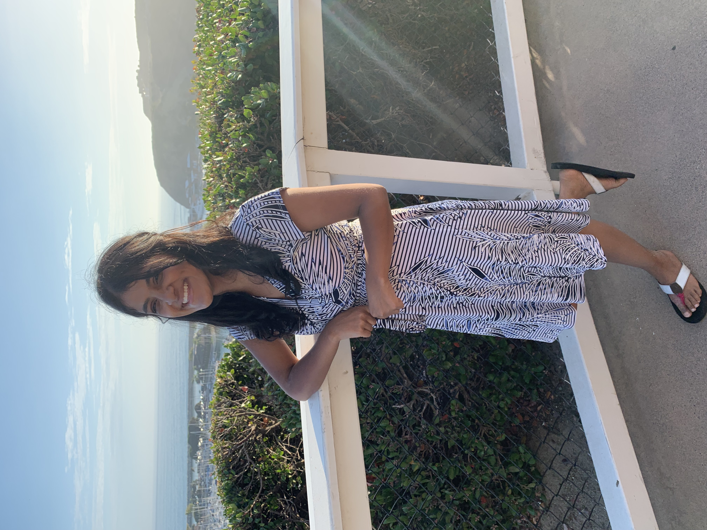

Welcome to Abita's Portfolio!
My goals are to eventually work in the field of public health and/or sustainability. I am not sure about specifics yet, but I want to take my last year of undergrad and a bit of time after college to gain experience either contact tracing or working in sustainable food climate jobs (ex. using maps to locate disease outbreaks or to look for areas vulnerable to particular climate change impact situations). In particular, as a critical digital map maker, it would be interesting to create an interactive map that both temporally and spatially showcases how different vulnerable groups, protected classes, or demographic categories of people are differentially affected by zoonotic diseases in years to come, since their prevalence is expected to increase. I enjoy writing, journalism, reading, and experimenting with new recipies. I also to thrift shop and buy more books than I end up reading.
